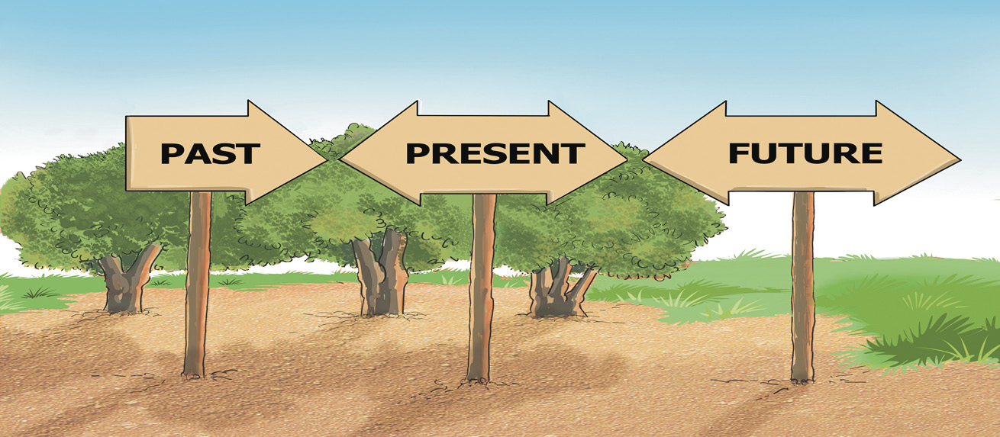

of life of other people. Therefore, by studying History, people learn and appreciate the cultures of other people in the world.
Promoting patriotism
History plays a critical role in promoting patriotism. Patriotism means the love of one’s society or nation, and the willingness to defend it. History promotes this love and willingness because it teaches how the past and present generations offered their lives to build the nation and defend it from internal and external enemies. It teaches how a nation started and how it changed over time. Moreover, History acknowledges men and women who played important roles in building the nation as national heroes and heroines. Through History, learners develop an appreciation of the memory and identity of their nation. History is, therefore, critical in making people know their nation, love it, and be ready to defend or even die for it. It is difficult for people who do not know their nation’s history to be proud of or ready to die for it.
Activity1.2
Study the following illustration, then write a paragraph on the importance of studying History.

Exercise 1.1
1. “Studying history wastes time because the subject deals with past events as opposed to contemporary life.” Explain.
2. Provide reasons on the argument that the history of our ancestors is our history.